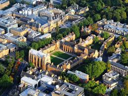
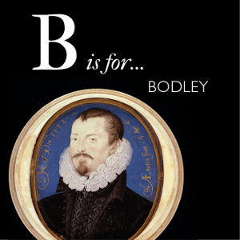
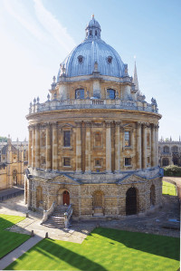

HISTROY OF THE KINGDOM
BOOKS KNOWLEDGE
Oxford’s libraries are among the most celebrated in the world, not only for their incomparable collections of books and manuscripts, but also for their buildings, some of which have remained in continuous use since the Middle Ages. Libraries in the Bodleian Libraries group include major research libraries, libraries attached to faculties, departments and other institutions of the University and, of course, the principal University library – the Bodleian Library – which has been a library of legal deposit for 400 years.
The Bodleian Library is one of the oldest libraries in Europe, and in Britain is second in size only to the British Library. Together, the Bodleian Libraries hold over 13 million printed items. First opened to scholars in 1602, it incorporates an earlier library built by the University in the 15th century to house books donated by Humfrey, Duke of Gloucester. Since 1602 it has expanded, slowly at first but with increasing momentum over the last 150 years, to keep pace with the ever-growing accumulation of books, papers and other materials, but the core of the old buildings has remained intact.
Known to many Oxford scholars simply as ‘the Bod’, these buildings are still used by students and scholars from all over the world, and they attract an ever-increasing number of visitors.

Thomas Bodley

The library was rescued by Sir Thomas Bodley (1545–1613), a Fellow of Merton College and a diplomat in Queen Elizabeth I’s court. He married a rich widow (whose husband had made his fortune trading in pilchards) and, in his retirement, decided to ‘set up my staff at the library door in Oxon; being thoroughly persuaded, that in my solitude, and surcease from the Commonwealth affairs, I could not busy myself to better purpose, than by reducing that place (which then in every part lay ruined and waste) to the public use of students’.
B is for BodleyIn 1598, the old library was refurnished to house a new collection of some 2,500 books, some of them given by Bodley himself. A librarian, Thomas James, was appointed, and the library finally opened on 8 November 1602.
Bodley’s work didn’t stop there. In 1610 he entered into an agreement with the Stationers’ Company of London under which a copy of every book published in England and registered at Stationers’ Hall would be deposited in the new library. This agreement pointed to the future of the library as a legal deposit library, and also as an ever-expanding collection which needed space. In 1610–12 Bodley planned and financed the first extension to the medieval building, known as Arts End.
18th–19th centuries

The growth of the collection slowed down in the early 18th century, but the late 17th and early 18th centuries saw a spate of library-building in Oxford. The finest of all the new libraries was the brainchild of John Radcliffe (1650–1714). He left his trustees a large sum of money with which to purchase both the land for the new building and an endowment to pay a librarian and purchase books. The monumental circular domed building – Oxford’s most impressive piece of classical architecture – was built between 1737 and 1748 based on the designs of James Gibbs, and it was finally opened in 1749. For many years the Radcliffe Library, as it was called until 1860, was completely independent of the Bodleian.Meanwhile the Bodleian’s collections had begun to grow again; more effective agreements with the Stationers’ Company, purchases and gifts meant that by 1849, there were estimated to be 220,000 books and some 21,000 manuscripts in the library’s collection. The Bodleian also housed pictures, sculptures, coins and medals, and ‘curiosities’ (including a stuffed crocodile from Jamaica).
By 1788, the rooms on the first floor were given over to library use, and by 1859 the whole of the Schools Quadrangle was in library hands. This left more space for storing books, which was further increased in 1860, when the Radcliffe Library was taken over by the Bodleian and renamed the Radcliffe Camera (the word camera means room in Latin)But with both readers and books increasing, the pressure on space once more became critical. In 1931 the decision was taken to build a new library, with space for five million books, library departments and reading rooms, on a site occupied by a row of old timber houses on the north side of Broad Street. The New Bodleian, as it was known then, was designed by Sir Giles Gilbert Scott and went up in 1937–40.
In 1975 new office space was acquired in the Clarendon Building, built for the University Press in 1712–13, and occupying the crucial site between the Old and New Libraries. Thus the whole area between the Radcliffe Camera and the New Library – the historic core of the University – came into the hands of the Bodleian.
Most recently, the New Bodleian building was completely renovated and reopened with large public and new academic spaces as the Weston Library in 2015.By the beginning of the 20th century an average of a hundred people a day were using the library; the number of books had reached the million mark by 1914. To provide extra storage space an underground book store was excavated beneath Radcliffe Square in 1909–12; it was the largest such store in the world at the time.